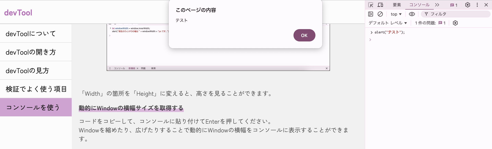

devTool
devToolとはWebページなどを作成する際に、その構造（HTMLやCSSなど）がどのようになっているか確認できるツールのことです。 検証ツールや開発ツールとも呼ばれています。
Google ChromeやSafariなどのブラウザにも搭載されており、ブラウザで表示しているページのHTMLや適用されているスタイルを確認したり、 自分の環境下でのみ変更したりすることが出来ます。
テスト検証の際にも、使用すると便利な事が多いため是非使って見ましょう。
ここではdevツールの導入方法とテスト検証の際に使用できる便利な機能を紹介します。
「Google Chrome」の検証ツール（デベロッパーモード）の開き方について説明します。
開いているページ上で右クリックをします。（画面内なら場所はどこでも大丈夫です）。 メニューが表示されたら、一番下の「検証」を選択してください。
Google Chromeの「検証ツール」を開くことができます。
「Safari」の開発ツール（デベロッパーモード）の開き方について説明します。
Safariヘッダーの「開発」メニューを押下して、メニュー内の「Webインスペクタを表示」を選択してください。
Safariの「開発ツール」を開くことができます。
※Safariで「開発」メニューが表示されていない場合
設定メニューを開き、詳細の「Webデベロッパ用の機能を表示」をチェックすると
「開発」メニューを表示させることができます。
devToolの説明をします。
スマートフォンやタブレットなどの実機を使うことなく、PCブラウザ上で様々な画面サイズの表示をチェックしながら、HTMLやCSSの調整を行うことができます。
レスポンシブデザインや、モバイル向けのページ制作を行う際に非常に便利です。
devToolの機能を選択・表示するパネルです。ざっくりとした機能を下に記載します。テスト実施時によく使用する機能は「要素（英:Elements）」です。
要素（英:Elements）
主にHTMLとCSSの検証に使われるパネルで、新しいデザインを実装する前のテストや、ページ表示に問題がある場合の原因調査などによく利用されます。
「ブラウザ表示中のページ」「HTMLソース」「CSSスタイル」の3つで構成され、HTMLソースはわかりやすいツリー構造、CSSは適用スタイルが優先度順に一覧表示されるなど、簡単にページ検証が行えるような仕組みになっています。
コンソール（英:Console）
ブラウザから出力されたログを確認できる機能。JavaScriptコードを簡易的に実行することも可能です。
ソース（英:Source）
ブラウザが読み込んだhtmlファイルなどのリソースの詳細を確認できる機能。特定の処理やイベント実行時にJavaScriptの実行を一時停止して細かい確認を行うことが可能です。
ネットワーク（英:Network）
ページ内でブラウザが実行した通信のログを確認できる機能。
devToolの設定を行うことができます。言語の選択や、devToolの表示位置を設定することができます。
表示されているページ内容をHTMLで確認できる画面です。
ページのHTMLやCSSの仮編集を行うことが可能です。仮編集した内容はブラウザ側のページ表示にリアルタイムで反映されます。ただ自分のローカルでのみ反映されるため、検証等でよく使用します。
デベロッパーツール左上からデバイスエミュレートモードを起動します。エミュレートするデバイスを選ぶことで画面幅や文字列が変更され、選択したデバイスサイズで確認することができます。
「iPhone 12 Pro」を選択した場合
端末回転のアイコンを押すと「iPhone 12 Pro」の画面を横にしたバージョンを確認できます
画面サイズ:「レスポンシブ」を選択し、サイズ入力のテキストボックスに「1920」を入力します。
デスクトップのサイズは横:1920pxがシェア率1位のため、テスト時にディレクターに確認して必要なサイズで確認しましょう。
HTMLの「a href」タグでURLの確認が可能です。リンク先が正しいかどうか等を確認します。
例えば、検証時に期待値と異なる画面に遷移する場合、URLのリンク先が合っているかを確認します。
確認したい要素の場所で検証ツールを開くと、該当のコードが表示されます。「a href="URL"」でURLを確認してみましょう。
HTMLのエリアからテキストボックスへ文字を入力することが可能です。
文字数制限でエラーが表示されるかどうか、文字種類でエラーが表示されるかどうか等で確認する際に使用することがあります。
確認したい要素の場所で検証ツールを開くと、該当のコードが表示されます。「value=""」に入力した文字が反映されます。
CSSのスタイルを無効化・追加することが可能です。CSSスタイルが正しいものが当てられているかを確認する際に使用することがあります。
「真ん中で表示されるはずのテキストが左寄りで表示されている」や「画像が小さい」などのレイアウト崩れや表示検証の際にCSSスタイルが影響しているかどうかを判別するために確認します。
確認したい要素の場所で検証ツールを開くと、該当のコードが表示されます。CSSエリアで該当スタイルのチェックボックスのON・OFFを実施してみましょう。
コンソールとはブラウザから出力されたログを確認できる画面です。
またJavaScriptコードを簡易的に実行することもできます。簡単なコードを入力し実行することでテスト検証で使用することもできるので、知っておくと便利です。
document.designMode = "on"
コードをコピーして、コンソールに貼り付けてEnterを押してください。
サイトページの文言をクリックするだけで文言を編集することができます。
画面設計書のスクリーンショットの差し替え時や、文言を検討する際に使用できると思います。
解除するにはリロードしてください。
※document.designMode = "on"を入力してwarningエラーが表示される場合
allow pasting
delete navigator.clipboard;
上記のコードを入力してコピー＆ペーストを許可してください。
let windowWidth = window.innerWidth;
alert("現在のウィンドウの幅は " + windowWidth + "px です。");
コードをコピーして、コンソールに貼り付けてEnterを押してください。
「現在開いているWindowのサイズを取得して、ダイアログで表示する」コードになります。
テスト検証で画面幅を確認してbacklog等に起票する際に使用できると思います。
「Width」の箇所を「Height」に変えると、高さを見ることができます。
コードをコピーして、コンソールに貼り付けてEnterを押してください。
Windowを縮めたり、広げたりすることで動的にWindowの横幅をコンソールに表示することができます。
window.onresize = function(){console.log( window.innerWidth );}
コードをコピーして、コンソールに貼り付けてEnterを押してください。
Chromeのバージョン情報を確認することができます。Chromeの設定から確認も可能ですが、コーンソールを使用して確認することも可能です。
console.log(navigator.userAgent);
コンソールを使用すると自分でダイアログを表示させることも可能です。 とても簡単なコードを入力するだけで、お好きな文字でダイアログを表示させることができるので、ダイアログの提案時に使用することができます。
ダイアログのボタンがOKのみ↓
alert("テスト");
ダイアログのボタンにキャンセルとOKがあり↓
confirm("本当に削除しますか？");